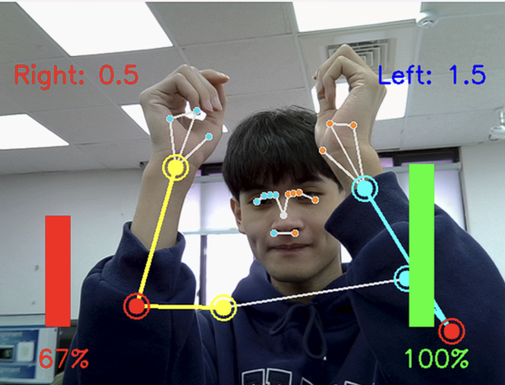
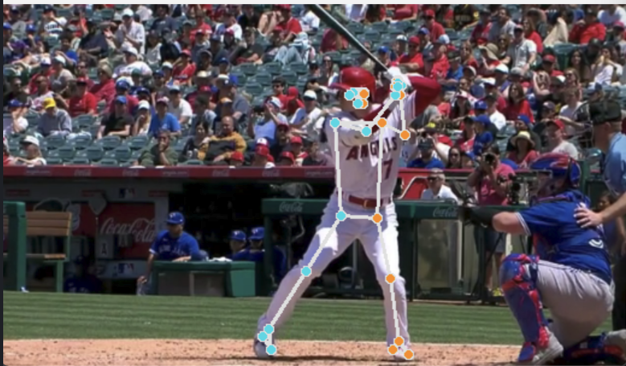

關於我
楊浩旻 B11108008
企業管理系學生
最高學歷: 國立台灣科技大學-學士
研究範疇: AWS在AI世代下的策略與定位分析
作品集
作品 1

實時手部動態解析儀 (Real-time Hand Motion Analyzer)
--------------------
本作品是一個基於 Python 的即時肢體偵測與手勢數值分析系統。透過先進的姿態估計技術，本系統能夠精確地追蹤畫面中人體的關鍵關節點，並在此基礎上進一步分析左右手的動態和形態。
作品 2

棒球揮棒姿勢分析系統 (Baseball Batting Pose Analyzer)
--------------------
這個系統專門用於分析棒球選手的揮棒姿勢。透過先進的姿態估計技術，系統能夠自動識別並追蹤選手的關鍵關節點，生成骨架模型進行動作分析。
作品 3
姿態估計與動作分析系統 (Pose Estimation and Motion Analysis System)
--------------------
這個系統使用深度學習技術來分析人體動作。透過電腦視覺和機器學習算法，系統可以即時追蹤並分析人體的關鍵點，幫助使用者更好地理解和改進他們的動作姿態。
作品 4：Demo 影片
SmartDigest 會議紀錄助手 Demo 影片展示自動摘要與功能流程。
聯絡方式
電話: 886-0980277404
E-mail: neal1995109@gmail.com